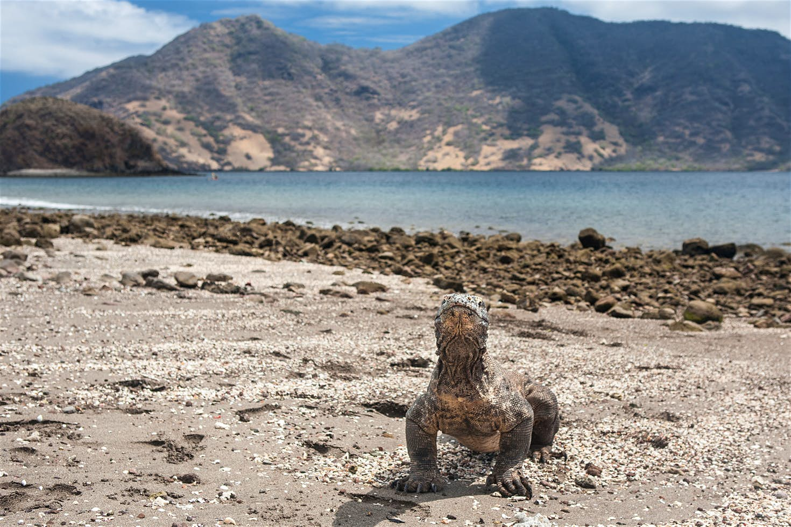

Port Fairy Folk Festival
The former haunt of whalers and seal-hunters, Port Fairy on Victoria’s grandiose Shipwreck Coast seems an apt location for this much-loved music festival, which turns 40 in 2016. Now a highlight of the international folk circuit, it’s four days of local and international acts – mainly folk, but some blues, roots and world music thrown in.

Driving the Gibb Road
Taking its complete circuit-of-the-country, Highway 1, in its Great Northern Highway guise, skirts along the southern boundary of the Kimberley region. Between Derby and Kununurra the road runs through Fitzroy Crossing and Halls Creek, but if you want to really get to grips with what is arguably the ‘Australian’ region then you have to abandon that and tackle the Gibb River Road.
The Roadhouse
The heart of Twin Peaks country is the Snoqualmie Valley, in the hills east of Seattle. It’s at an easy distance for a day trip from the big city. Drop in first to Fall City, a town that is home to the building which starred as Bang Bang Bar, generally referred to as The Roadhouse. This was Twin Peaks’ adult entertainment venue, filled with couples and bikers listening to live music and downing a beer or two.
Komodo National Park
Sunbaked and barren, Komodo stands apart from other more verdant Indonesian islands, and the island's most celebrated species is also singular and surprising. The world's biggest lizard can grow up to three metres-long, and Komodo dragons are often seen lumbering along the beach by visitors arriving at the national park's main camp at Loh Liang. Guided walks with national park staff continue for 30 minutes to a dry riverbed at nearby Banu Nggulung where the huge monitor lizards are often seen.
